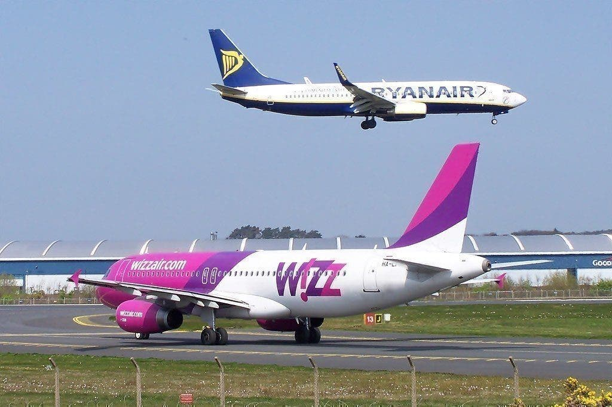

Wizz Air will fly from Bucharest to Palma de Mallorca starting August 9th
12 July 2020
The low-cost company Wizz Air announced today a new route from Bucharest to Palma de Mallorca with two flights per week, starting from August 9, 2020.
Passengers can already book tickets with prices starting from 119 lei, the flights being operated on Thursday and Sunday.
Mallorca, the largest of the Balearic Islands, is one of the most popular holiday destinations in Europe.
“We continue to expand our network of routes in Romania with another interesting holiday destination.
With the new route from Bucharest to Palma de Mallorca, we bring more travel opportunities for Romanians who can enjoy travel
safely aboard our modern aircraft, ”said George Michalopoulos, Wizz Air's Chief Commercial Officer.
Wizz Air announced at the end of last month eight new routes from Bucharest to destinations in Italy, Norway, Germany and Greece,
the flights will be available from August. The new routes are from Bucharest to Cagliari (Sardinia / Italy), Copenhagen and Bergen (Norway),
Hamburg, Karlsruhe / Baden-Baden and Memmingen (Germany), Santorini and Mykonos (Greece).
Wizz Air announced new protocols throughout the flight: both cabin crew,
as well as passengers are required to wear masks, the cabin crew also having gloves.
Wizz Air aircraft are periodically nebulized with an antiviral solution and all aircraft are disinfected overnight with the same antiviral solution.
Each passenger receives sanitary napkins upon entering the aircraft,
on-board magazines have been removed from the aircraft, and contactless payment is recommended for all on-board purchases.
Wizz Air is a low-cost European carrier based in Budapest, Hungary, with rapidly expanding operations throughout the region and as far as Abu Dhabi in the United Arab Emirates. Founded in 2003, the airline has become one of the largest airlines in Europe.
If two-hour flights only cost $ 21 each way, how can the airline offer such low-cost fares? Let's find out.
A "constant emphasis on costs"
While the name and category of "low-cost carrier" can be used to describe the prices of cheap tickets, it is more about the low cost of the airline's operations. According to one of Wizz Air's latest earnings reports, it has a "constant focus on costs".
Here are some ways the airline reduces its operating costs:
-A fleet of one type (Airbus A320 family of aircraft) means that all ground crew, cabin crew and pilots need to train for only one model. This also means that if there is a problem with an aircraft, it is much easier to replace a replacement with the same seat configuration. This change of plane, of course, would not be as easy between an A320 and an A321.
-In addition, by increasing the majority of its fleet, the airline can ensure that it has a young collection of efficient and reliable aircraft. This reduces downtime for maintenance as well as fuel costs - normally the biggest expense for an airline.
The cheapest Wizz Air tickets are usually for flights departing or landing at less than ideal times. This could mean leaving very early in the morning or entering the last flight of the night. In some cases, Wizz Air can be found in a separate satellite or airline terminal - one that is stripped of the usual comfort of the airport, to which many of us have become accustomed. This further reduces the costs of the airline's airport operations.
Economy of scale
WizzAir has one of the densest cabin configurations
Wizz Air, like other low-cost carriers, has a business model based on economies of scale. Instead of making a big profit from every passenger, the airline makes a smaller profit while carrying more passengers. That's why you won't find a premium cabin on any of the Wizz Air plans.
In fact, the airline has one of the densest configurations on the market. Airbus A321 has 230 seats in a single class configuration. This is much more than British Airways' European A321 configuration, which has 54 in business and 123 in economy. Of course, this costs the passenger comfort: the pitch of Wizz's seat is weak by 28 centimeters, while the standard for most airlines (even Ryanair) is 30 centimeters. On the sloping side, the airline can sneak in a few extra rows of seats and sell more tickets.
Moreover, the airline ensures the flight of its aircraft as often as possible. This means tight processing times at airports, which makes the boarding and boarding process as fast as possible. Part of this is achieved by boarding using both the front and rear doors of the aircraft through stairs.
An extremely basic ticket
The most relevant answer for those traveling on Wizz Air is that the fares posted by the airline leave a lot. While full-service airlines may have a free snack and beverage service, it is absent from Wizz Air.
Passenger experience is essential in other ways as well. The original plane ticket you see does not include checked baggage or even a full cargo. Rather, for the basic fare, you are limited to what can fit under the seat in front of you.
Anything else you would expect to be included in the flight experience is low and costs extra. This includes work such as seat selection and airport check-in.
Conclusion

As you can see, the reasons why Wizz Air tickets are so cheap are similar to many other budget operators: leave the "statements" and let customers pay extra fees for them. Like other budget carriers, Wizz Air also relies on a large volume of flights with a high-density configuration on board to pack as many passengers as possible.
The notable difference seems to be that the Wizz Air seat is smaller than the European Ryanair and EasyJet competitions.